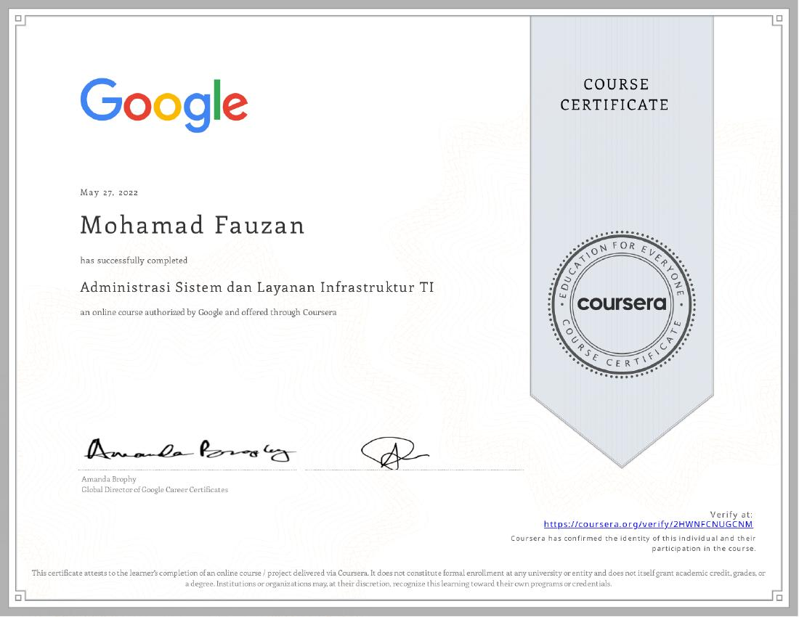
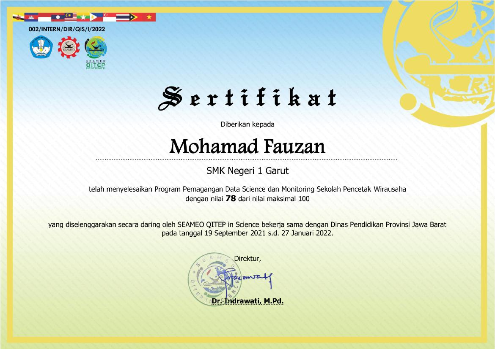
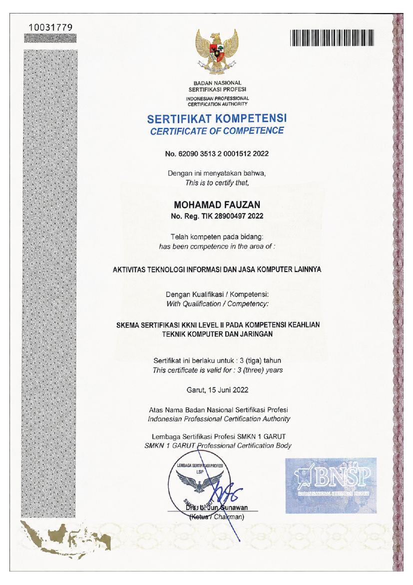
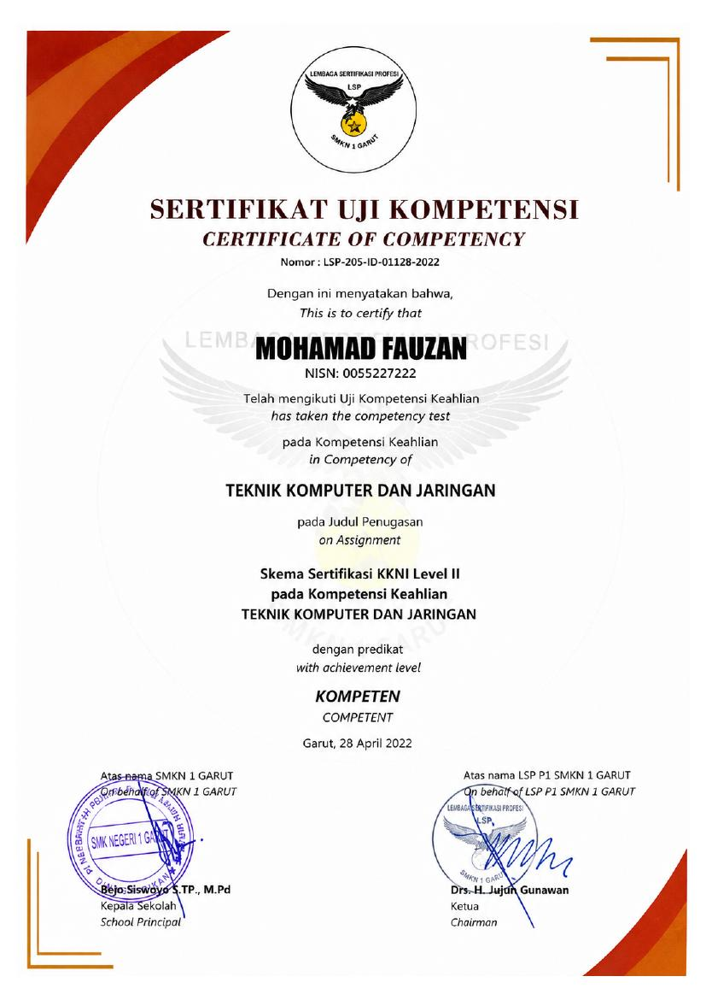

Profesional operasional dan logistik dengan pengalaman mengoordinasikan kegiatan hub, memantau produktivitas tim, mengolah serta memvalidasi data operasional, menyusun laporan, dan memonitor KPI. Terbiasa menggunakan Microsoft Excel dan Google Sheets untuk rekapitulasi dan pemantauan data.
Kekuatan utama berada pada kombinasi koordinasi lapangan, ketelitian administrasi, pengolahan data, monitoring KPI, dan problem solving.
Mengoordinasikan aktivitas hub, memantau produktivitas tim, mengidentifikasi kendala, dan memastikan tindak lanjut operasional.
Mengolah, merekap, memvalidasi data operasional, menyusun laporan, memonitor KPI, serta mengembangkan dashboard monitoring.
Pengalaman kerja dari operasional hub hingga logistik, warehouse support, e-commerce, dan layanan.
Area kontribusi yang paling relevan dengan Inventory, Warehouse, Logistics, dan Operations.
Pengalaman terkait pencatatan stok, monitoring barang, pengelolaan inventaris, pengendalian barang, dan koordinasi gudang.
Mengolah dan memvalidasi data operasional, membuat rekapitulasi, laporan, monitoring KPI, serta dashboard untuk membantu evaluasi.
Mengelola jadwal pengiriman, monitoring aktivitas pengemudi, dokumen pengiriman, serta koordinasi dengan tim gudang dan pihak terkait.
Mengoordinasikan tim, memonitor produktivitas, mengidentifikasi kendala, dan melakukan tindak lanjut untuk menjaga kelancaran operasional.
Latar belakang pendidikan dan pelatihan profesional yang mendukung kemampuan teknis dan operasional.
Dasar jaringan komputer, hardware & software, troubleshooting, dan sistem komputer.
Fondasi teknis yang mendukung pemahaman sistem komputer, troubleshooting, dan teknologi informasi.
Sertifikat pelatihan dan kompetensi. Pilih pratinjau atau tombol untuk membuka PDF asli.

Google · Coursera · 17 Mei 2022
Lihat sertifikat ↗
SEAMEO QITEP in Science · 19 September 2021
Lihat sertifikat ↗
LSP SMKN 1 Garut · 15 Juni 2022
Lihat sertifikat ↗
LSP SMKN 1 Garut · 28 April 2022
Lihat sertifikat ↗Terbuka untuk peluang di bidang Inventory, Warehouse, Logistics, Operations, dan fungsi administrasi terkait.